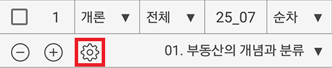

㉠ ~ ㉣, ① ~ ⑤ 부분을 클릭하면 Ｏ Ｘ Ｖ ？ ☆ 를 클릭한 부분 앞에 표시할 수 있고, ( ) 부분을 클릭하면 ( )에 내용을 입력할 수 있습니다.
| Ｏ | ㉠ 부동산학은 토지 및 그 정착물에 관하여 그 것과 관련된 직업적, 물적, 금융적 제측면을 연구하는 학문이다. |
| ？ | ㉡ 부동산학은 토지와 건물을 대상으로 탐구하는 물리학이나 지구과학과 같은 순수과학이라고 할 수 있다. |
| Ｏ | ① 어느 부동산과 밀접한 대체재가 시장에 출현한다면, 그 부동산에 대한 수요의 탄력성은 이전보다 더 커진다. |
| Ｘ | ② 수요의 가격탄력성은 가격이 변할 때 수요량이 얼마나 변하는지를 나타내는 정성적(qualitative) 지표이다. |
| 사무실의 월임대료가 9만원에서 11만원으로 상승할 때 사무실의 수요량이 108㎡에서 92㎡로 감소했다. 이때 수요의 가격탄력성은 ( 0.8 ) 이며, 이 수요탄력성을 ( 비탄력적 ) 이라고 할 수 있다. |
빨간색 테두리 부분을 클릭하면 색연필 기록을 관리할 수 있습니다.
